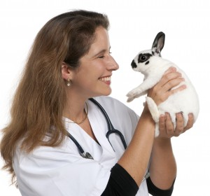

Wisdom Pet Medicine was founded by Dr. Darren Winthrop, Dr. Elizabeth Chase, and Dr. Kimberly Sanders to bring the best in traditional and alternative medicine to the local community. The three doctors met while pursuing their veterinary education at Colorado State University, one of the nation's top-rated vet schools. After going their own ways (for almost a decade), to work for different veterinary clinics across the country, the doctors decided it was time to combine their diverse knowledge and skills under one practice at Wisdom Pet Medicine.
Our veterinary hospital provides general and specialty vet medicine, and serves as a major surgical center in the region. We're often referred difficult cases from other vet clinics throughout the region, state, and country, and even treat cases from other countries. With specialties in orthopedics, dermatology, oncology, radiology, and ultrasound, we're able to diagnose and treat more conditions in-house, allowing your pet to feel comfortable in friendly and familiar surroundings for the duration of his or her care. We all love animals and strive to make your pet's experience as positive as possible, and even have a pet play yard in the back of our clinic where we give our overnight visitors regular time away from the stress of confinement and treatment. We're proud to say that most of our patients come in wagging their tails happily on return visits - a true indicator that we've made them feel safe and secure. We're honored that you've entrusted your pet's care to us, and we'll stand by our commitment to provide the absolute best in veterinary medicine.
 Dr. Winthrop is the guardian of Missy, a three-year old Llaso mix, who he adopted at the shelter (he just couldn’t resist those sad eyes). Dr. Winthrop is passionate about spay and neuter and pet adoption, and works tireless hours outside the clinic, performing free spay and neuter surgeries for the shelter.
Dr. Winthrop is the guardian of Missy, a three-year old Llaso mix, who he adopted at the shelter (he just couldn’t resist those sad eyes). Dr. Winthrop is passionate about spay and neuter and pet adoption, and works tireless hours outside the clinic, performing free spay and neuter surgeries for the shelter.
Dr. Chase spends much of her free time helping the local bunny rescue organization find homes for bunnies, such as Kibbles. This cuddly Dalmatian bunny is part of the large Chase household, which also includes two dogs, three cats, and a turtle.
 Leroy walked into Dr. Sanders’ front door when she was moving into a new house. After searching for weeks for Leroy’s guardians, she decided to make Leroy a part of her pet family. Leroy has settled into his new home, and especially enjoys playing with Dr. Sanders’ other cats.
Leroy walked into Dr. Sanders’ front door when she was moving into a new house. After searching for weeks for Leroy’s guardians, she decided to make Leroy a part of her pet family. Leroy has settled into his new home, and especially enjoys playing with Dr. Sanders’ other cats.